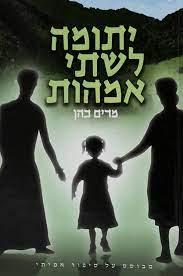
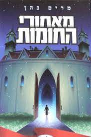
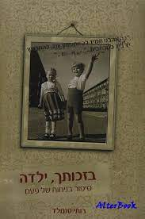
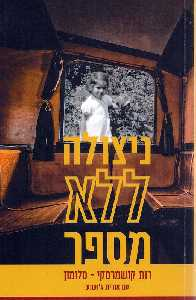

| Moive name |
Movie poster |
Movie description |
| Orphan for two mothers |
 |
The events, suffering and resilience of an orphan girl who was sold to parents who were not hers: written as a hand and a name for the honest and innocent Hungarian Jews who were murdered by the Nazis and their helpers on kidush Hashem
|
|
| Behind the walls |
 |
The story of Chana, a little girl in a large, intimidating monastery during the Holocaust, is based on a true story |
| Thanks to you, Girl |
 |
A story of a paralyzed little girl, interwoven with the painful life story of the famous Hillman, dealing with faith and confidence |
| Surviver with no number |
 |
Two-year-old Ruth, born in Germany, is smuggled to Switzerland using the "Kinder-Transport" when the Nazis came to power. She is sent to Amana to the home of a middle-class Christian family. Pastoral Switzerland, beautiful and legendary, does not explain its face to the little Jewish girl. Her life is a mask of ridicule, alienation and severe and continuous suffering. Her only aunt shows no interest in her. This is the story of the survival of a small and lonely girl, her fight for life. Will she find the way back to her homeland and her people? |
| Little sister |
 |
A lonely brother and sister make a long journey with their vines in search of the uncle's house. A story of brotherhood, devotion and sacrifice
|